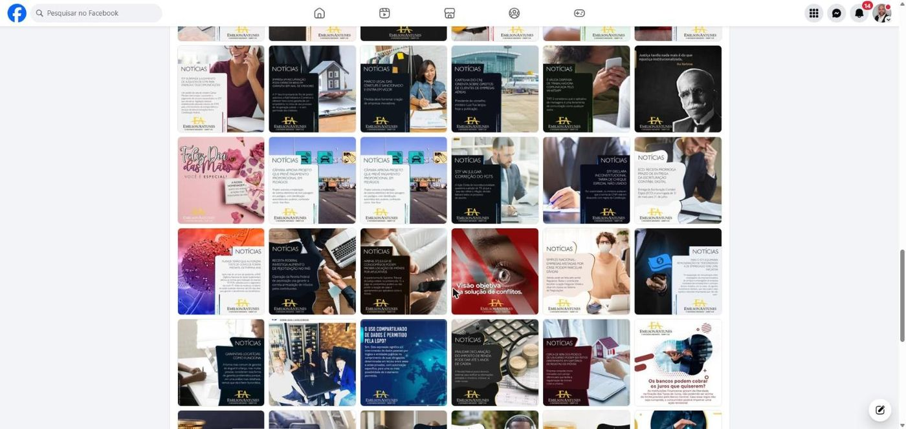
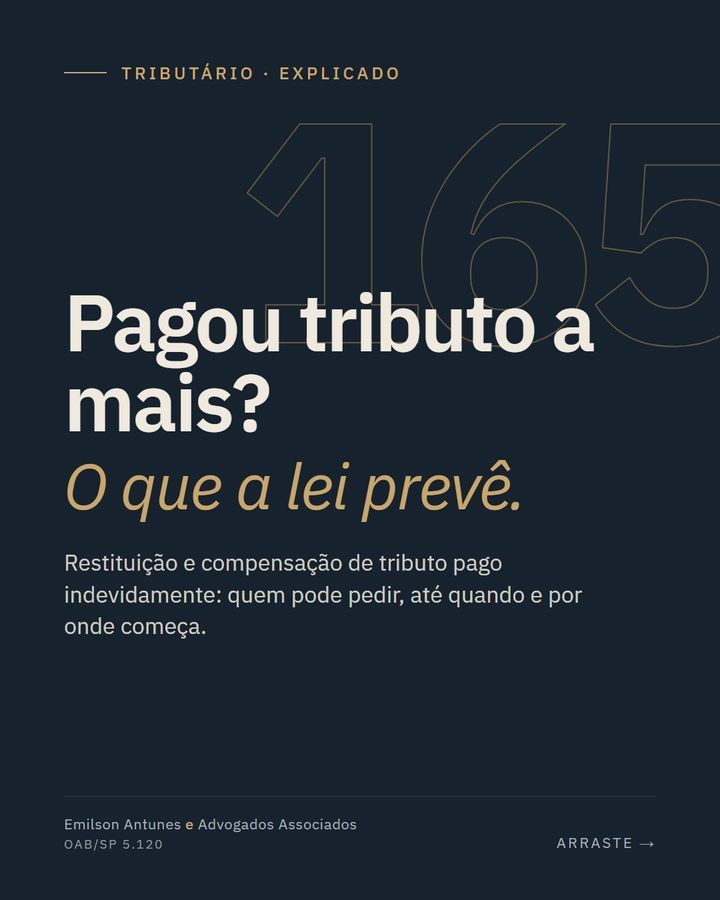
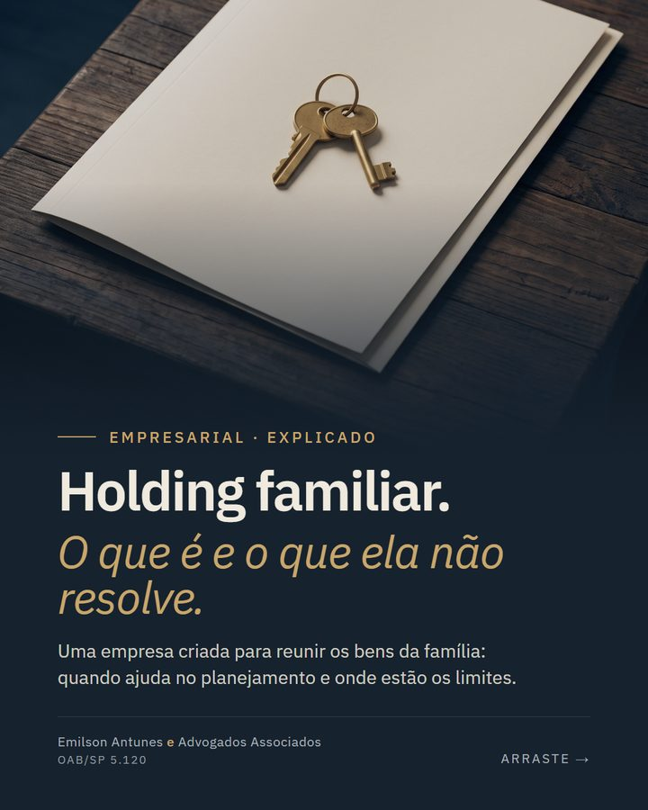

Quatro canais, nenhum trabalhando a favor do escritório.
Tema pronto de 2016
Editado pela última vez em 2020. Nenhum advogado aparece, textos genéricos e repetidos, sem descrição para o Google, pesado no celular.
Parado desde 2022
179 publicações, no máximo 4 reações cada. A página aparece como "emilsonantunes_aa". Fotos de banco de imagem e texto miúdo.
Público sem conteúdo
6.683 seguidores e nenhuma publicação visível. É o canal com mais gente esperando.
Perfil sem dono
Aparece como não reivindicado, sem avaliações, só com a foto da fachada e horário de sexta diferente do site.
Publicidade informativa, sóbria e verdadeira.
Código de Ética e Disciplina (arts. 39 a 47-A) e Provimento 205/2021 do Conselho Federal, lidos na fonte oficial em 11/11/2026.
O que fazemos
- Explicamos temas jurídicos com a lei citadamarketing de conteúdo, Prov. 205, art. 4º
- Mostramos as pessoas de verdade, com nome e inscriçãoCED, art. 44; Prov. 205, art. 5º, § 2º
- Impulsionamos só conteúdo informativoAnexo Único do Provimento
- Nome da sociedade e OAB em todas as peçasCED, art. 44
O que nunca fazemos
- Preço, gratuidade ou descontoProv. 205, art. 3º, I
- Promessa de resultado ou caso de clienteProv. 205, art. 6º
- "Os melhores", "de sucesso", "especialista" sem títuloProv. 205, art. 3º, III e IV
- Incentivar o leitor a entrar na Justiçacomo "você tem direito, processe já" · CED, art. 41
- Foto de banco fingindo ser a equipe; logotipo da OABProv. 205, arts. 3º, II, e 5º, § 2º
Moderno, direto, com a sede e as pessoas do escritório à frente.
Abertura com a sede do escritório e uma chamada clara, as quatro áreas em galeria, quem somos com os advogados e contato direto pelo WhatsApp. Cada área tem página própria com o que o escritório faz e perguntas frequentes respondidas com a lei. O protótipo abaixo funciona: role, clique nas áreas.

Retomar o perfil que já tem 6,7 mil seguidores.
Em vez de criar outro perfil, o escritório continua no mesmo endereço, @emilsonantunes_aa, com os 6,7 mil seguidores. Mudam três coisas que aparecem no perfil: o nome em destaque passa a ser "Emilson Antunes Advogados", a categoria passa a ser "Escritório de advocacia" e a bio é a de baixo. A partir daí, duas publicações por semana. O Facebook recebe a mesma peça e passa a se chamar "Emilson Antunes e Advogados Associados".
Bio propostaEmilson Antunes Advogados · Escritório de advocacia
Consultoria e contencioso: tributário, trabalhista, empresarial e civil
OAB/SP 5.120 · eaaa.com.br
Role a tela do celular para ver o perfil inteiro.
Temas que o escritório já tratou, refeitos.
Duas direções visuais, mesma paleta e mesma letra. Toque em X ou em Y para trocar o carrossel abaixo.
Arraste para comparar.



O primeiro contato de muita gente.
- Reivindicar o perfilfeito pelo próprio escritório
- Categoria "Escritório de advocacia"
- Mesmo horário do site e WhatsApp no perfil
- Fotos reais da recepção, da sala e das pessoas
- Os mesmos conteúdos informativos das redes
- Nome, inscrição, formação e área de cada advogadoe quem tem título de especialista
- Fotos reais e um advogado para vídeos curtospodemos organizar a sessão
- Fotos da sede e da recepçãoa capa do site usa, por enquanto, uma foto da construtora do Edifício Geon
- Logotipo em arquivo vetorialo site usa o arquivo publicado no site atual
- Acesso ao Facebook, ao Instagram, ao Google e ao painel do site
- Quem aprova os textos e quais temas querem em destaque
- Horário de sexta: até as 17h ou até as 18h?
Do esboço ao ar.
- Conversa para escolher a direção visual e responder o que falta.
- Revisão dos textos e das leis citadas pelo escritório.
- Sessão de fotos reais.
- Site no ar e Instagram retomado com as primeiras publicações.